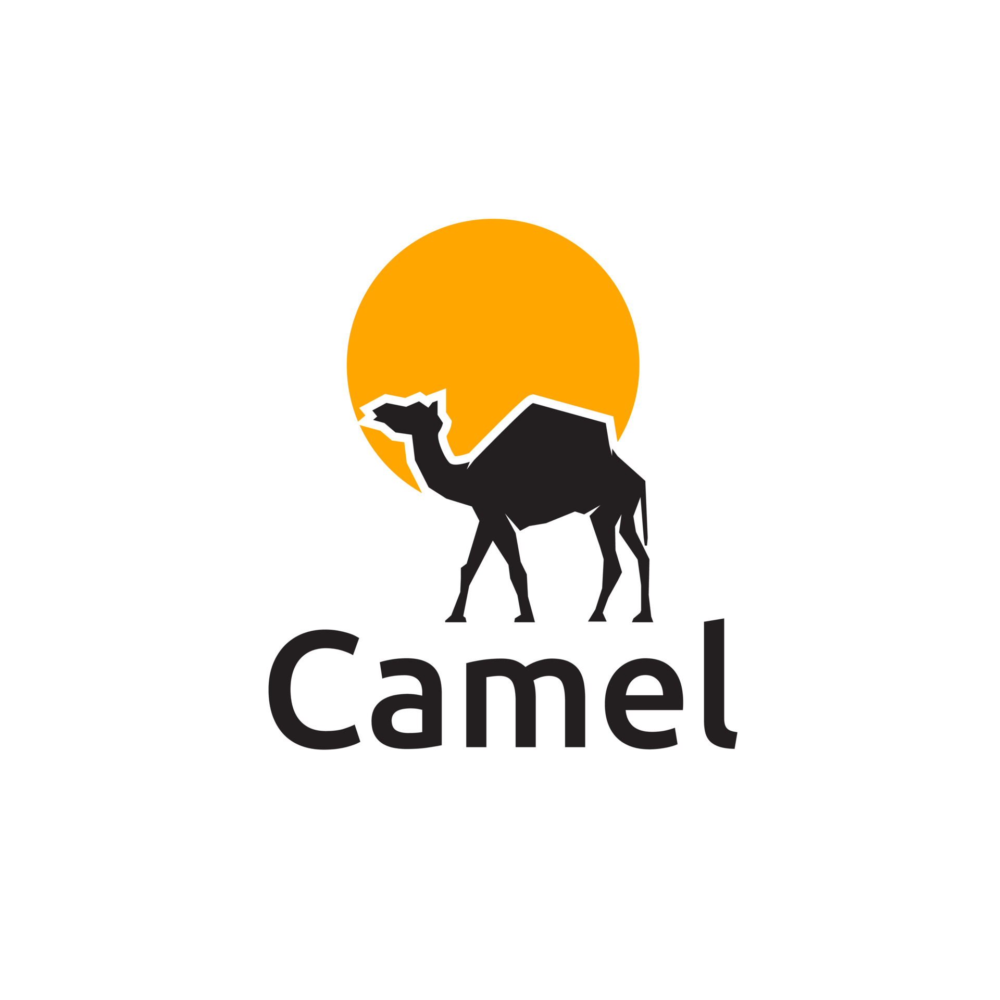

|
Mehrdad Aksari Mahabadi I'm studying computer science at Amirkabir University of Technology. I am a member of the algorithms, graphs, and machine learning laboratory (AGM) at Amirkabir University. Currently, the main focus of the lab is graph neural networks. We discuss the cutting edge research in this area during weekly sessions. Previously I worked at Snapp as a software engineer. Snapp is the leading company in taxi services with over 30 million users in Iran. As part of the Routing team, we were responsible in providing estimated time of arrival (ETA) and navigation services. To this end, we investigated various solutions and trade offs between different path finding algorithms. As a team, we integrated historical and live traffic data into our routing engines to enable time-dependent routing. |

|
Projects |

|
lunar lander
project page / original paper In 2013, a deep learning model successfully learned control policy directly from high-dimensional sensory input. The model was applied to seven Atari 2600 games from the Arcade Learning Environment. It surpassed human experts in four of them. Here I used the same method to learn to land on the moon ! |

|
Evolucop
project page Evolucop is an evolutionary agent that masters a simplistic helicopter game. It uses a three layers neural net, to choose wether to push the helicopter. The challenge is in training the net. There are many ways to train a network that can solve this effectively. As the name suggests Evolocop uses Evolution. |
|
Vanilla GAN
project page writing and training generative adverserial neural networks from scratch in Pytorch |
|

|
eigen digits
project page singular Value Decomposition (SVD) is a factorization of a matrix. In this report, we will show how to classify hand-written digits leveraging the aforementioned decomposition. In order to classify an image, we will see which principal component can best estimate the given image. |

|
ANN
project page implementation of a simple artificial neural network framework in pure numpy |

|
visual cryptography
project page / original paper Visual Cryptography is a cryptographic technique which allows visual image to be encrypted in such a way that the decrypted information is a visual image. One of the best-known schemes is by Adi Shamir & Moni Naor developed 1994. |
|  |
Camel
project page Camel is an interpreted programming language written in Golang |
| |